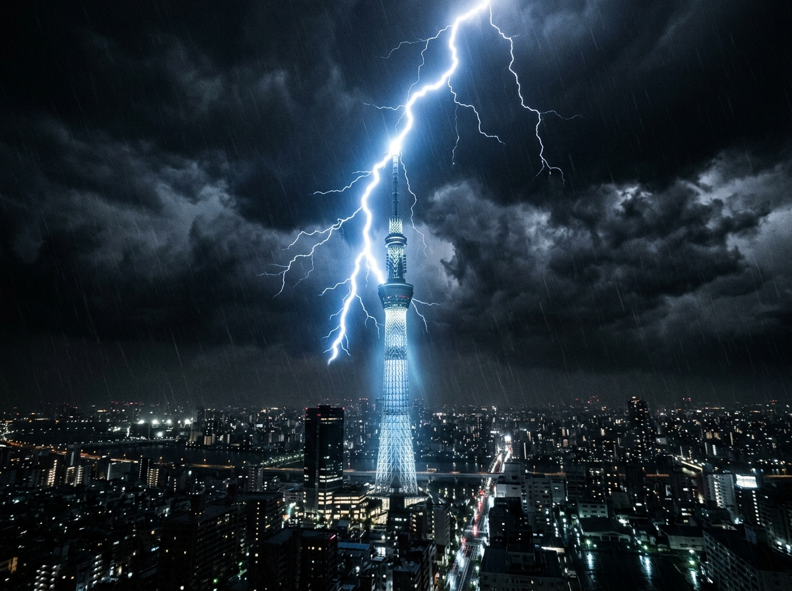
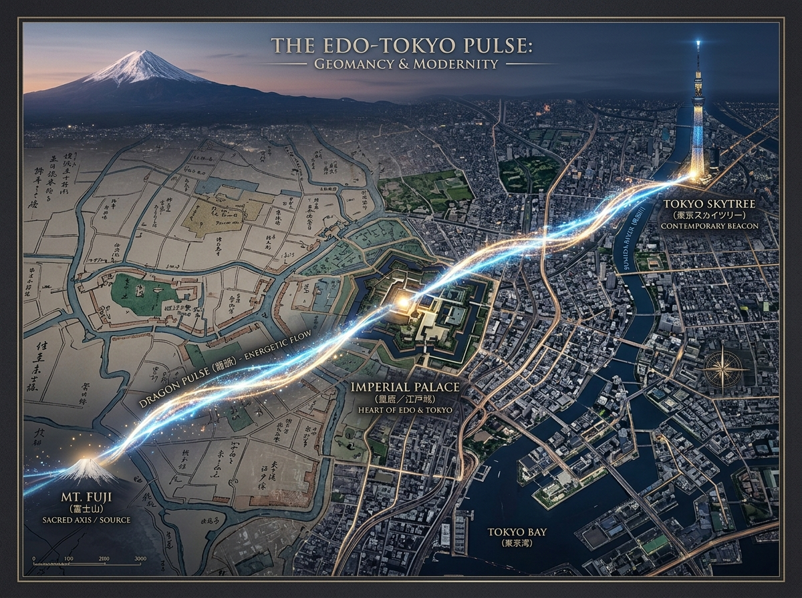
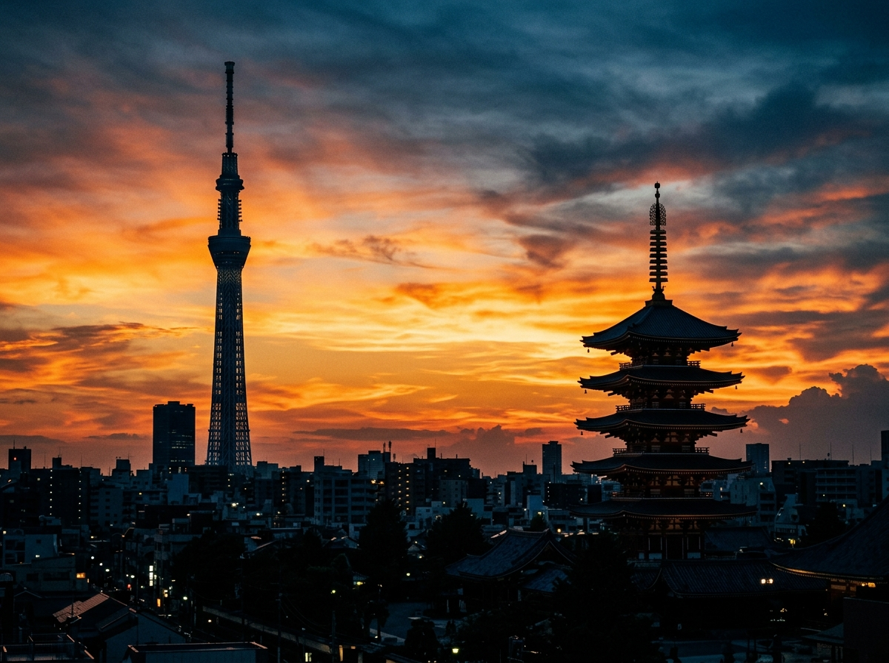

Most visitors to Tokyo will look at the Skytree and think: how tall. I looked at it and thought: how patient.
The tower stands 634 metres above the rooftops of Sumida ward. To the engineers, that figure is a structural achievement. To me, it has always felt like a quietly spoken sentence — one that the city has been whispering to itself since long before steel and glass were even imaginable.
What follows is not a technical account. It is simply what I have pieced together, turning it over in my mind the way one might turn a smooth stone in one's paw — noticing the weight, the temperature, the way the light falls across it differently depending on the angle.

A midnight storm. The Skytree's tip catches lightning, glowing blue-white against the dark — as if it has been waiting for exactly this.
Chapter One — The Old Guard of the North-East
When Tokugawa Ieyasu chose to build his capital at Edo, he did not simply pick a convenient plot of land. The monk Tenkai advised him on something far older than politics: the spiritual geometry of the city itself. Every temple, every gate, every shrine was placed not at random but in careful conversation with the invisible grid of energy that the Japanese call ryuryaku — the Dragon Pulse.
The most anxious direction, in this geometry, is the north-east. It is the Kimon — the Demon Gate — the direction through which misfortune is believed to enter. Tenkai placed the great temple of Kaneiji there, as a kind of quiet, dignified guardian.
Now look at a modern map of Tokyo with fresh eyes. Tokyo Tower — red and white, nostalgic, warmly lit — stands in the south-west, near Zojoji Temple, still guarding what the old planners called the Ura-Kimon, the reverse gate. And the Skytree, cool and blue and reaching impossibly upward, was erected in Sumida: the north-east. Precisely where the Demon Gate still quietly opens.
I do not think this is coincidence. I am not sure I believe in coincidence for things that took this much care to build.
A city grows. Its old walls thin out. The careful web of protections that Tenkai knotted around Edo loosened, as all knots do over centuries. The Skytree, in this reading, was driven into the earth like a renewal — a new stake in an ancient contract between the land and the people who chose to live upon it.
Chapter Two — The Name Hidden in the Height
Six. Three. Four.
In Japanese, these three numbers can be read as mu, sa, and shi — which together give you "Musashi," the ancient province that was once this whole stretch of land, long before it had the name Tokyo or Edo or anything we would recognise.
There is a tradition in Japan called kotodama: the belief that words carry their own spirit, their own living energy. To speak a name is not merely to label something. It is to call that thing into being, to strengthen it, to invite it closer.
When the Skytree was given its height of exactly 634 metres, the engineers cited practical reasons: it needed to be tall enough to broadcast signals above the surrounding buildings. But 634 also spells Musashi. And I find it rather lovely to imagine that somewhere in the long committee meetings and structural calculations, someone paused and thought: yes, that number. Let it be that number.
Whether by intention or happy alignment, the tower carries its landscape's old name in its very bones. It is, in a sense, an address written in steel: I am standing on Musashi ground, and I remember what that means.

Past and present layered over each other. Glowing lines trace Mt. Fuji, the Imperial Palace, and the Skytree — a dragon drawn in light across five centuries.
Chapter Three — The Appetite of Lightning
The Skytree is struck by lightning more often than almost any other structure in Japan. The scientific explanation is as straightforward as it is unsentimental: it is very tall, it is made of conductive metal, and it rises above everything around it. Of course it draws the storm.
But there is another way of seeing it, if you are willing to sit with the older vocabulary for a moment.
In Japanese mythology, lightning is ikazuchi — the sound of thunder, yes, but also the breath of divine force, raw and clarifying. It does not discriminate. It simply arrives, fills the moment entirely, and leaves the air smelling clean.
From that angle, the Skytree is less a passive victim of storms than an active participant in them. It reaches up. It receives. It draws the chaotic energy of the sky into itself and sends it harmlessly into the earth. This is called harae in Shinto — purification. The dispersal of kegare, the accumulated heaviness that settles over any place where many people live closely together, carrying their worries and griefs and fatigue.
A city of thirty-eight million people produces a great deal of kegare. The tower, I think, is patient about this. It simply keeps accepting it, night after night, storm after storm, lit in blue and purple above the sleeping rooftops.
A Thought to Leave You With
The next time you see the Skytree — in a photograph, through a train window, or standing underneath it with your neck tilted back until the very tip disappears into cloud — I hope you feel something slow down inside you.
Not because it is mystical in some heavy, demanding way. But because it is a structure that holds more than one story at once: the story of broadcast engineering, and the story of a monk who mapped a city's spirit in the seventeenth century, and the story of a land called Musashi that remembers its own name.
That kind of layering is, I think, what makes certain places feel worth returning to. The tower is not asking you to believe anything in particular. It is simply standing there, as it always does, in the north-east, doing its patient work.

The Skytree and Senso-ji's pagoda share a horizon. Centuries apart, both built on the same idea of a still, strong centre.